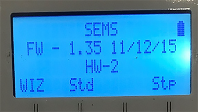
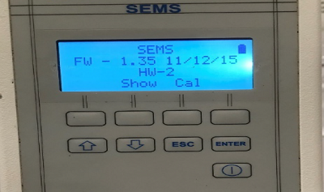
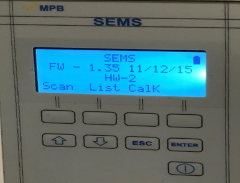
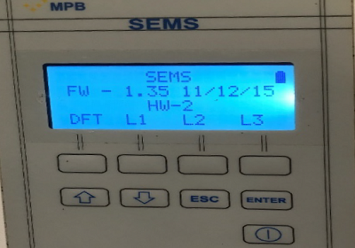
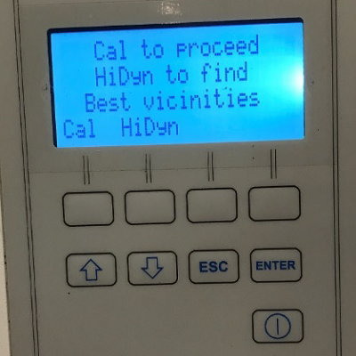
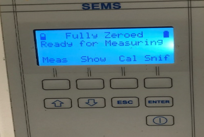

- Object ID: 00000018WIA306A67B0GYZ
- Topic ID: id_2045879 Version: 1.11
- Date: Jul 28, 2025 5:46:11 PM
Zeroing the coherent noise tool kit
Zero the transmitter (Tx) and receiver (Rx) units in the coherent noise tool kit.
Procedure
- From the Receivers Power On menu, select Std.
Figure 1. Receiver (Rx) power on menu 
- Press the Cal button.
Figure 2. Rx calibration (Cal) selection 
- Press the List button.
Figure 3. Rx List selection 
- Based on system type, select the applicable preloaded frequencies from the list below. (Refer to Frequencies for frequency selection.)
- L1
- L2
- L3
Figure 4. Rx List menu selection 
Table 1. Frequencies List selection Product type Frequencies L1 1.5T Products 63.86 MHz 51.00 MHz 76.60 MHz L2 3.0T Products 127.72 MHz 102.20 MHz 153.30 MHz L3 7.0T Products 238.4 MHz 238.9 MHz 298.0 MHz - Press the Cal button.
Figure 5. Cal to proceed screen 
- When the coherent noise tool kit Rx and transmitter (Tx) units are zeroed, a message will show the equipment is Fully Zeroed.Note Make sure two battery icons show on the Receivers Screen. This means the fiber-optic cables are correctly seated and the Tx/Rx units are communicating with each other. If there are not two battery icons, examine the cable connections and do zeroing again.Note The battery on the upper left corner is for the Tx, while the battery on the upper right is for the Rx.
Figure 6. Fully Zeroed screen 
- To warm up the units, do Step 2 through Step 6 two more times.Note Zeroing only needs to be done three times if the Rx and Tx were recently powered on.